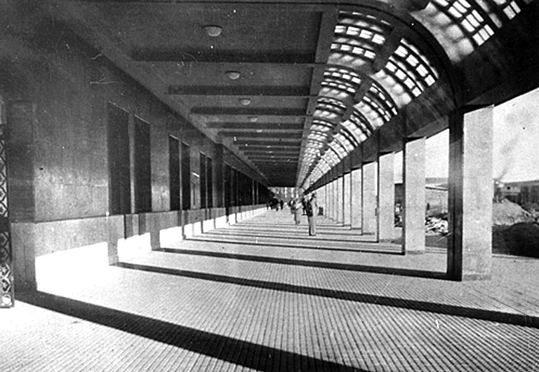
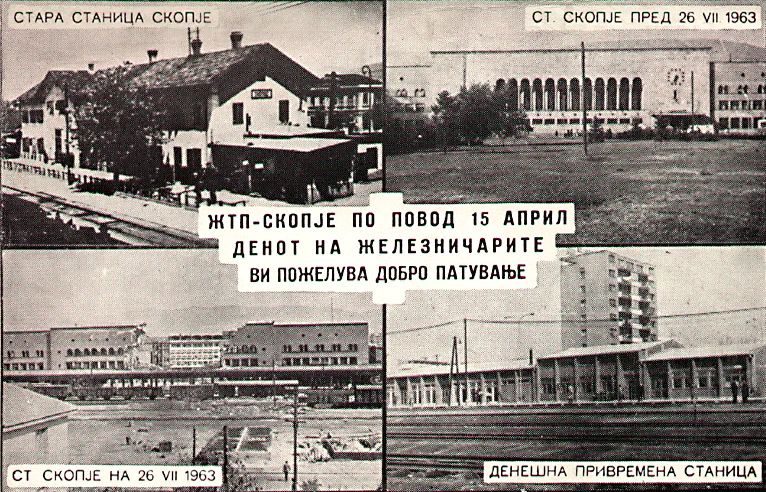

Le train arrive
- Scénario et réalisation
- Trajče Popov
- Opérateur
- Branko Mihajlovski
- Année
- 1951
- Durée
- 00:09

L'ancienne gare de la fin du XIXe siècle. Construite en 1873 sous l'Empire ottoman. La carte postale montre l'entrée principale de la gare ; les voies se trouvaient derrière. L'architecture porte la marque du style néoclassique. Au premier plan, une marchande de produits laitiers.

L'ancienne gare de la fin du XIXe siècle. Construite en 1873 sous l'Empire ottoman. La carte postale montre l'entrée principale de la gare ; les voies se trouvaient derrière. L'architecture porte la marque du style néoclassique.

La première gare. Photographiée de l'arrière. (début du XXe siècle)

L'ancienne gare, vue de l'arrière. (début du XXe siècle)

La « nouvelle gare » - sa construction commence en 1937. Elle est mise en service le 1er décembre 1940, bien que le quai ne soit pas achevé et les colonnes non terminées. Elle se distingue par l'emploi de formes modernes et la réinterprétation de formes byzantines, romantiques et populaires. Lors du terrible séisme du 26 juillet 1963, les 2/3 du bâtiment s'effondrent. Le tiers restant, consolidé, abrite aujourd'hui le musée de la ville de Skopje. Le bâtiment est un mémorial du séisme du 26 juillet 1963 : l'horloge arrêtée au-dessus de l'entrée du musée indique 5 h 17, le moment tragique du 26 juillet 1963.

La gare pendant la Seconde Guerre mondiale.

La gare après la Seconde Guerre mondiale (l'actuel musée de la ville de Skopje), côté entrée principale.

La gare après la Seconde Guerre mondiale (l'actuel musée de la ville de Skopje), côté quais.

Le quai de la gare - 1940.

La gare en construction - photographiée de l'arrière - années 1940.

La gare en construction - photographiée de l'avant - années 1940.

Carte postale-collage qui retrace en quatre photos l'histoire des gares de Skopje.

Le nouveau centre de transport. (années 1980)

 Aqueduc4 cartes postales
Aqueduc4 cartes postales Kale30 cartes postales
Kale30 cartes postales Ponts60 cartes postales
Ponts60 cartes postales Quai58 cartes postales
Quai58 cartes postales Place46 cartes postales
Place46 cartes postales Édifices66 cartes postales
Édifices66 cartes postales Églises chrétiennes19 cartes postales
Églises chrétiennes19 cartes postales Édifices musulmans33 cartes postales
Édifices musulmans33 cartes postales Cercle des officiers29 cartes postales
Cercle des officiers29 cartes postales Théâtre28 cartes postales
Théâtre28 cartes postales Gare ferroviaire13 cartes postales
Gare ferroviaire13 cartes postales Écoles36 cartes postales
Écoles36 cartes postales Parcs12 cartes postales
Parcs12 cartes postales Marchés18 cartes postales
Marchés18 cartes postales Rues38 cartes postales
Rues38 cartes postales Panorama I60 cartes postales
Panorama I60 cartes postales Panorama II30 cartes postales
Panorama II30 cartes postales Collages55 cartes postales
Collages55 cartes postales Inondations9 cartes postales
Inondations9 cartes postales Séisme27 cartes postales
Séisme27 cartes postales Skopje 200026 cartes postales
Skopje 200026 cartes postales